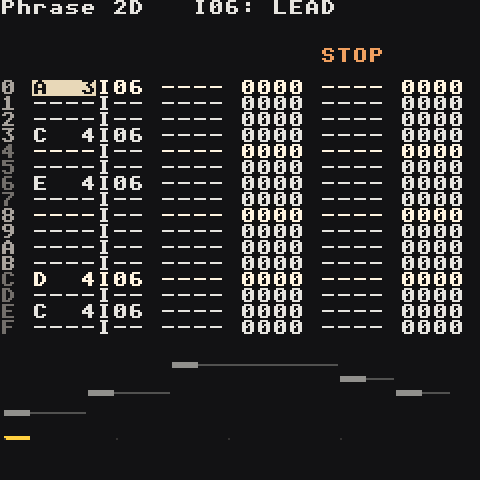
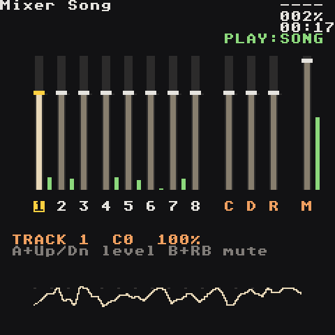

Demo Songs
A handful of finished songs to open, play and pull apart: the walkthrough song you can build yourself, synthwave, a wuxia epic on real Chinese instruments, chiptune, house, and a stress test that runs every engine at once. Open them from the project list (they're in Applications/Tracks after Install), press Start on the Song screen, then go poke around. Every idea in the other wiki pages is used somewhere in here.



Afterglow — the walkthrough song
lgpt_Afterglow · C minor · 128 BPM with swing · 1:00
The melodic house track Your First Song builds press by press, finished. It starts from the synth kit every new song has and ends up using nearly everything the app does.
| Track | Part |
|---|---|
| 1 | Macro Synth kick, four on the floor |
| 2 | Macro Synth snare with a reverb send; a ROLL + VOLM roll into each drop |
| 3 | Macro Synth hats, 16ths made with the fill tool, every 4th one CHNC 0080 |
| 4 | rolling 8th-note bass (the starter kit's bass) |
| 5 | HyperSynth hyper pad, chord maj9 with scale on, ducked by the kick (MOD trig), lows cut with its EQ |
| 6 | FM4 epiano stabs on the off-beats, CHRD 007E |
| 7 | HyperSynth trance lead: the hook |
| 8 | a reversed crash from the drums-909 pack, and one bar of the pad rendered to a sample and reversed |
Look at:
- One bar, four chords — the bass, pad and keys chains play the same phrase four times with transposes 00 FC 03 FE: Cm9, A♭maj9, E♭maj9, B♭9.
- Song rows 00–07 — intro, build, drop, drop, break, build, drop, outro. Chain 07 is the rest (a KILL), on every cell where a part drops out.
- The Groove — 07 05 swings the 16ths.
- Mix — Mixer (kick up, bass down), FX reverb size, master EQ, limiter, and Project Drive: 70 for headroom.
Neon Drive — synthwave
lgpt_NeonDrive · A minor · 100 BPM · 1:55
| Track | Part |
|---|---|
| 1 | kick (half-time verses, four-on-the-floor choruses) |
| 2 | snare with reverb, fill at the end of every 4 bars |
| 3 | hats, accented 16ths in the chorus |
| 4 | octave-jumping 8th-note bass |
| 5 | pad chords, one note + CHRD per bar |
| 6 | pluck arpeggio |
| 7 | lead melody (a bell takes it in the break) |
| 8 | crash and tom fills |
Look at:
- Song rows 00–0B — each row is a section: intro, verse, chorus, break, build, outro.
- Track 6 in the intro — only the first note has an instrument number, so the FCUT 60C0 filter sweep keeps opening across four bars.
- Track 5 — chords are voiced as inversions (C 3 + CHRD 0059), so they move smoothly instead of jumping.
- The build — a snare crescendo with VOLM, then RTRG 0003 for a 32nd-note roll into the drop.
Jade Sword — wuxia / donghua
lgpt_JadeSword · A minor pentatonic · 92 BPM · 2:05
Neon Drive's song map re-scored for a martial-arts epic, played on recordings of real Chinese instruments. Compare the two projects screen by screen.
| Track | Part |
|---|---|
| 1 | dagu (big drum) with rim hits |
| 2 | Beijing-opera percussion: bangu clapper drum, small gong, cymbals |
| 3 | temple block in the verses, pipa plucks in the second chorus |
| 4 | sub bass on the chord roots (synth) |
| 5 | soft string pad (synth) |
| 6 | guzheng — flowing broken chords and glissandos |
| 7 | erhu — the chorus melody |
| 8 | dizi flute in the verses, the big opera gong on section starts |
Look at:
- Every melody uses only A C D E G — the pentatonic scale is what makes it sound Chinese.
- Sample instruments — open any of them: each plays one recording, repitched from its root note. Erhu and dizi have two recordings each (low and high) so no note is stretched too far.
- Grace notes — a quick step into a melody note (D4 E4 at the start of a bar) is how erhu and dizi players ornament.
- Soft second plucks — in the break the guzheng plucks its long notes again with VOLM 50, like a player letting the string ring. (Fast RTRG on a recorded instrument stutters, so it's saved for drums.)
- Glissando — a fast pentatonic run with rising VOLM before the chorus.
- Opera percussion on one track — each step picks its own instrument (clapper, small gong, cymbals).
The recordings are CC0 and CC BY 4.0 from Freesound; CREDITS.md in the song folder lists every author.
Pixel Quest — chiptune
lgpt_PixelQuest · C major · 140 BPM · 1:02
Look at:
- ARPG 0047 / 0037 — one held note becomes a buzzing 8-bit chord.
- Drums from basic waves — a triangle with a pitch drop for the kick, crunchy noise for snare and hats.
- Echo lead — track 7 plays the same melody with DLAY 0003 and a delay send: a cheap stereo double.
Engine Room — the stress test
lgpt_EngineRoom · A minor · 100 BPM · 0:38 loop
Every heavy sound at once, on all 8 tracks the whole time: Macro Synth drums, FM4 bass, a HyperSynth pad (a six-note chord of detuned saws), FM4 e-piano chords (CHRD makes four FM voices per note), a HyperSynth lead and sampled piano, with chorus, echo, reverb, the master EQ and the limiter all working. If this plays cleanly, anything you write will. The device log's [HEARTBEAT] lines show the audio engine's load peak while it plays.
Sunset Club — house
lgpt_SunsetClub · A minor · 124 BPM · 1:02
Played on the sample packs: 909 drums, piano chords and a finger bass.
Look at:
- Four on the floor — the kick on every beat (steps 0 4 8 C), the clap on 2 and 4, the open hat on every offbeat (2 6 A E).
- House piano — one-shot min7/maj7 chords chopped into syncopated stabs, each cut short with KILL.
- The bass between the kicks — it plays the offbeats, so bass and kick never fight.
Make them yours
- Change the tempo on the Project screen.
- Swap a preset: go to any instrument, A + Left/Right on
preset. - Mute tracks with B + RB to hear how each part is built.
- Save Song As to keep your version and leave the original untouched.
The songs are generated from Python in tools/demos/ with the song composer, so they double as code examples of every technique.